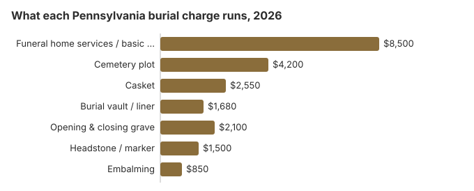

Burial Costs in Pennsylvania
Plan on $19,530 to $24,030 for a full burial in Pennsylvania in 2026, adding up this page's table: about $8,500 for funeral home services, $4,200 for the plot, $2,550 for a casket, $1,680 for a vault or liner and $2,100 to open and close the grave, plus $500 to $5,000 for the headstone. Those are among the higher burial figures in the country, driven mostly by the Philadelphia and Pittsburgh areas.
Line-by-Line Pennsylvania Burial Prices
| What you pay for | Pennsylvania estimate | Usual spread |
|---|---|---|
| Funeral home services / basic service | $8,500 | $6,375 – $11,050 |
| Cemetery plot | $4,200 | $2,100 – $8,400 |
| Casket | $2,550 | $850 – $6,800 |
| Burial vault / liner | $1,680 | $800 – $10,000 |
| Opening & closing grave | $2,100 | $500 – $3,000 |
| Headstone / marker | $1,500 | $500 – $5,000+ |
| Embalming | $850 | $500 – $1,500 |
How these were built: no Pennsylvania provider supplied these prices; they come from our cost model, so read them as planning figures rather than a quote or advice. The model is described in full, and the disclaimer lists what it cannot tell you.
State sources: 49 Pa. Code § 13.205.

Depending on what the family chooses, a Pennsylvania burial usually lands between $19,530 and $24,030, though cemetery fees are often billed separately from funeral home services. Within that total, the basic services fee had a national median of $2,495 in the NFDA 2023 price study, and the cost of a funeral can rise quickly when caskets vary by material and design.
- Traditional burial: This is the most expensive option and usually includes viewing, embalming, a hearse, graveside service, and burial. For comparison, the average cost of a traditional funeral is about $8,300 nationally, though Pennsylvania totals can run higher once cemetery charges are included.
- Direct burial: No embalming, no funeral ceremony, no viewing. This is one of the lowest-cost burial options, though direct cremation usually costs less still; its NFDA 2023 national median is $2,645 with a family-supplied container.
- Green burial: Minimal preparation, biodegradable casket or shroud, and no vault. Greener burials can lower the overall cost because they avoid embalming and expensive vaults.
These are the three most common burial options in Pennsylvania, but not every funeral home offers all of them. Many providers also offer cremation services as an alternative to burial, and families can use a funeral cost calculator to compare cremation, burial, and service prices, while traditional funerals usually include more facility use, staffing, and transportation than simpler arrangements.
Burial and Funeral Costs Options in Pennsylvania
- Direct burial: The body is buried shortly after death without embalming, viewing, or ceremony. An obituary is optional; newspaper obituaries often cost about $200–$500.
- Learn about green burial
Lowering a Pennsylvania Burial Bill
Three ways Pennsylvania families cut the bill:
- Ask about winter before you sign: many Pennsylvania cemeteries charge extra to open frozen ground between December and March, and some hold the casket in a receiving vault until a spring burial, which can be a separate fee.
- Try church and borough cemeteries: Pennsylvania has an unusually large number of nonprofit, denominational and municipal cemeteries, and their lot prices are often lower than those of for-profit memorial parks.
- Look one county over: twenty or thirty minutes outside Philadelphia, plot prices can drop sharply while the grave stays an easy drive for visits.
How Pennsylvania Burial Compares With the Region
Pennsylvania also has about 1,800 funeral homes, so prices can vary depending on the provider, your location, and the services offered by funeral directors. For a deeper statewide perspective, our Pennsylvania burial costs guide for 2026 expands on these averages and options. Nonprofit, municipal, and denominational cemeteries in Pennsylvania routinely undercut commercial memorial parks by $1,260-$2,520 on the plot line. The FTC Funeral Rule has been in place since 1984, which is another reason to compare provider pricing carefully. Get quotes from at least one of each type.
Burial Resources
- Funeral Consumers AllianceNonprofit consumer advocacy for funeral pricing, with legal rights explanations, memorial planning tools, and cost guides for family members
- Headstone & Monument GuideCosts, types, and buying tips for honoring a loved one
- Green Burial OptionsEco-friendly and natural alternatives
- Best Online Casket RetailersCaskets bought online often cost less for funeral arrangements and funeral planning
- Best Burial InsuranceCompare plans to cover burial expenses for your family
Compare Funeral Costs
- Average Funeral Cost in 2026National cost breakdown with real prices; Pennsylvania’s cremation rate is approaching 53%
- Cremation vs. Burial Cost ComparisonSide-by-side price comparison to help you decide: cremation services in Pennsylvania typically cost about $6,280, with full-service cremation around $6,500
- Funeral Cost BreakdownA detailed breakdown of every line item explained, using national averages for comparison and showing the median cost
- Cheapest Funeral OptionsAffordable alternatives, including affordable cremation services, that can save thousands
- Direct Cremation: Most Affordable OptionCremation with no viewing or ceremony: the lowest-cost disposition choice
- How to Compare Funeral PricesStep-by-step guide to getting the best price
Frequently Asked Questions about Financial Assistance
How much does burial cost in Pennsylvania?
The overall cost of a burial funeral in Pennsylvania is approximately $8,500 for the funeral service plus $4,200 for a cemetery plot. When you add a burial vault ($1,680), graveside opening and closing labor (about $2,100 in our Pennsylvania estimate, within the usual $500 to $3,000 range), casket ($2,550), and headstone ($500-$5,000), the Pennsylvania total typically ranges from $19,530 to $24,030, depending mostly on the marker; our Pennsylvania funeral cost guide shows the service prices on their own.
Are burial vaults mandatory in Pennsylvania?
Pennsylvania law does not require a vault, but most Pennsylvania cemeteries require a vault or liner in their rules. Ask which they accept and whether you can buy it from a vault dealer or funeral home instead of the cemetery.
If you buy the vault in advance from a cemetery, Pennsylvania's Cemetery and Funeral Merchandise Trust Fund Law (Act 459 of 1963) requires the seller to deposit 70% of the retail price into a merchandise trust until the vault is delivered. Ask for a copy of the contract showing that the deposit applies to your purchase.
How can I reduce burial costs in Pennsylvania?
Start with direct burial, which runs about $5,100 in Pennsylvania on this site's estimates, and buy the casket and vault from outside sellers if the cemetery's rules allow it. Eligible veterans can be buried at no cost for the grave at Indiantown Gap or another VA national cemetery in Pennsylvania.
If money is very tight, Pennsylvania DHS pays up to $750 toward burial for eligible people, paid to an enrolled funeral director (55 Pa. Code ch. 283). Resources of $1,500 or more in the estate disqualify it, so check eligibility with your county assistance office before the funeral is arranged.
How do I compare cemetery costs in Pennsylvania?
Ask for written prices for the plot or crypt, opening and closing, any vault or liner requirement, and marker foundation fees, and ask whether the cemetery will let you buy the vault or marker elsewhere. Cemeteries are not covered by the FTC Funeral Rule unless they also sell funeral services.
In Pennsylvania, the State Real Estate Commission licenses cemetery brokers and salespeople, and complaints about them can be filed with the Department of State. Funeral homes answer to the State Board of Funeral Directors (1-833-367-2762).
What does a Pennsylvania burial total once everything is counted?
Counted line by line (an $8,500 service, a $4,200 plot, a $2,550 casket, a $1,680 vault, $2,100 to open and close the grave and a $500-$5,000 headstone), a Pennsylvania burial usually reaches $19,530 to $24,030. Final expense insurance is a type of funeral insurance and a life insurance policy that can help pay funeral expenses. In Pennsylvania, preplanning contracts must be funded through a trust or escrow account, and for Medical Assistance an irrevocable burial reserve is not counted as a resource, although money put into one can be treated as a transfer of assets if the arrangement costs more than 25% above average local burial costs (55 Pa. Code § 178.5).
Is natural burial an option in Pennsylvania?
More Pennsylvania cemeteries are opening green sections, where the body goes into a biodegradable container with no embalming and no vault, and the bill usually comes in under a traditional burial. Where no green ground is close, some families settle on a hybrid: a conventional plot, but no embalming. By contrast, cremation has a mandatory 24-hour waiting period in Pennsylvania, and the authorization form must be signed by next of kin for the deceased. Pennsylvania law also allows home funerals without a funeral director, which gives families more flexibility in making arrangements at the end of life.
More for Pennsylvania
Pennsylvania pre-need trust rules and death certificates
Many Pennsylvania families have already paid for part of a burial, often a vault, marker or opening fee bought years earlier from a cemetery. Pennsylvania's Cemetery and Funeral Merchandise Trust Fund Law, Act 459 of 1963, governs those purchases. Under section 2 of the act, a seller who takes money now for burial merchandise or services delivered at death must deposit 70 percent of the retail price in a trust at a Pennsylvania bank, within 30 days after the month the final payment arrives. If the buyer stops paying before the contract is paid off, the seller may keep 30 percent of the contract price and must refund the rest of the special account. A buyer who moves out of state after paying in full can cancel and receive the principal on deposit. The law does not cover cemetery lots themselves, which section 8 leaves out. If a seller fails to deliver after a death, the family can recover the deposit from the trustee by affidavit.
Death certificates from the Pennsylvania Department of Health cost $20 each, however many you order, plus a $10 service fee for online orders through VitalChek (Pa. Department of Health, checked October 29, 2026). Act 137 of 2024 waives the $20 fee, up to ten copies a year, when the person who died was a veteran or active service member, or the spouse of one, and the applicant is the spouse, a dependent child's representative or the estate's representative; the online service fee still applies. Five copies cost $100 at full price, or nothing for an eligible veteran's widow ordering by mail.
Pennsylvania offers a version without medical information for deaths after 2019, which is enough for closing bank and utility accounts and transferring titles; keep the copies that show cause of death for life insurers.
Who regulates a Pennsylvania burial, and where to get help
The Pennsylvania State Board of Funeral Directors (1-833-367-2762) licenses the funeral homes that arrange burials. Cemetery sales are not always under the same office, so ask the board who oversees the particular cemetery before you file a complaint about a plot.
Pennsylvania is not one of the nine states on the Funeral Consumers Alliance list, so a family may arrange a burial without a funeral director as long as the burial permit is in hand and the cemetery's own grave rules are met. When you do call a funeral home and only a staff member is available, that person can make tentative plans, but a licensed funeral director has to ratify them within 48 hours and handle the final arrangements (49 Pa. Code § 13.205).
Burial can follow as soon as the permit is issued. Pennsylvania's 24-hour wait (49 Pa. Code § 13.212) is a cremation rule.
Help with the cost
The Department of Human Services will pay up to $750 toward the burial of an eligible person through a funeral director enrolled with it, but if the estate and other countable resources, such as family contributions, add up to $1,500 or more, it pays nothing (Pennsylvania DHS, 55 Pa. Code ch. 283).
Veterans
For an eligible veteran, a national cemetery grave, opening and closing, and marker cost nothing. Pennsylvania's three open national cemeteries sit near its three biggest metro areas: Washington Crossing in Newtown, near Philadelphia (215-222-7510), Indiantown Gap in Annville, near Harrisburg (717-865-5254), and the National Cemetery of the Alleghenies in Bridgeville, near Pittsburgh (724-746-4363). The state also runs the Pennsylvania Soldiers' and Sailors' Home Cemetery in Erie (814-871-4531) (source: VA National Cemetery Administration). Graves are booked through the VA's National Cemetery Scheduling Office, 800-535-1117.
Before you sign anything in Pennsylvania
- Price the cemetery on its own: plot, opening and closing, vault or liner and marker are often sold separately from the funeral.
- Find out whether the cemetery requires an outer burial container before you buy one.
- Ask the county assistance office whether the estate and contributions fall under the $1,500 resource limit before you buy a plot.
- Have the DD214 discharge record ready if the person served; the national cemetery will ask for it.
- Report a funeral home that misprices a burial to the board at 1-833-367-2762.